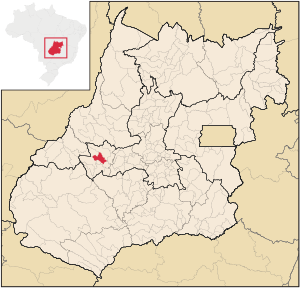

 Israelândia é um município brasileiro do interior do estado de Goiás, Região Centro-Oeste do país, seus habitantes são denominados israelandenses. Tem como prefeito(a) atualmente Miriâ Pires Barbosa de Souza Dantas. De acordo com estimativas do Instituto Brasileiro de Geografia e Estatística, sua população em 2017 era de 2 910 habitantes.